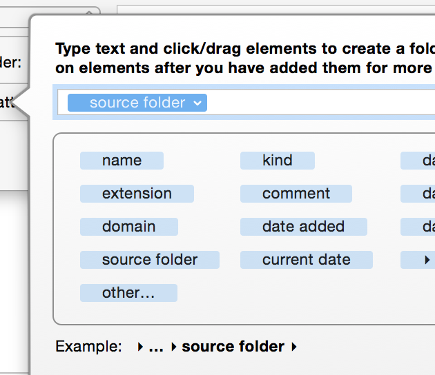

Using the source folder attribute
When editing a pattern for the "Sort into subfolder" action, the source folder attribute becomes available.
This attribute represents the folder the file/folder is in at the time the rule is run. This value is set before any actions are run so any actions which move the file will not affect change this value for a particular run. You can use this attribute to mirror or copy over the folder structure from one place to another.
The source folder attribute has three different formatting options. You can access the options by clicking on its arrow after you have dragged it into your pattern. The options are as follows:
- Show folder name only
- Show path from monitored folder
- Show full path
These options are best explained by example. If we take a folder structure like the following:

For the purposes of this example, Folder B is the folder Hazel is monitoring and the rules are set up such that Hazel will descend into any subfolders.
If processing File 1, the source folder attribute will expand out to the following values:
- Show folder name only: Folder B
- Show path from monitored folder: nothing (there are no folders in between File 1 and the monitored folder)
- Show full path: Macintosh HD ▸ Folder A ▸ Folder B ▸
If processing File 2, the source folder attribute will expand out to the following values:
- Show folder name only: Folder D
- Show path from monitored folder: Folder C ▸ Folder D ▸
- Show full path: Macintosh HD ▸ Folder A ▸ Folder B ▸ Folder C ▸ Folder D ▸
Mirroring folder structures
The source folder attribute can be used to mirror a folder structure. Let's say you want to copy files to a folder called Backup. Assuming you have another rule to tell Hazel to descend into subfolders, you can set up a rule to do the following:

These actions will first copy the file to the Backup folder, then it will move it into a subfolder based on the folder structure it had at the source. In this case, we use the folder path only up to the monitored folder. When used against our sample folder structure above, we would get something like this:

Here, you can see that by getting the path up to the monitored folder, we get everything below Folder B. By using the source folder attribute in this way, you can mirror folder trees.